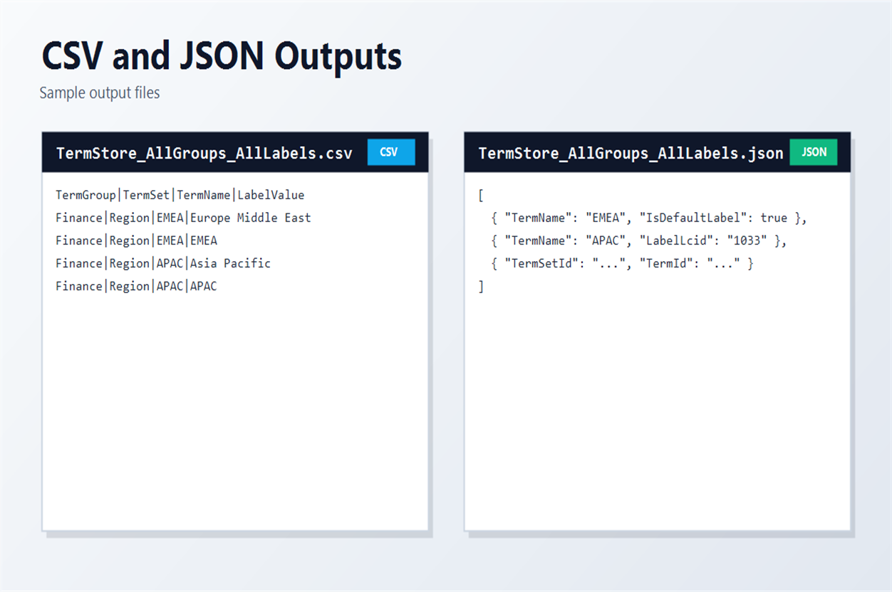

Export all term groups with translation labels
Summary
This script exports SharePoint Term Store data across all available term groups (or a selected subset) including term sets, terms, and multilingual labels.

The output can be generated as CSV, JSON, or both formats. The script handles token expiration by reconnecting and retrying, supports optional filtering by term group names, and writes one output file per term group.
Use this sample when you need a complete export of taxonomy structures and translated labels for governance, migration, or reporting.
[CmdletBinding()]
param(
[Parameter(Mandatory = $true)]
[string]$TenantAdminUrl,
[Parameter(Mandatory = $true)]
[string]$ClientId,
[Parameter(Mandatory = $false)]
[string]$OutputPath,
[Parameter(Mandatory = $false)]
[ValidateSet("Csv", "Json", "Both")]
[string]$ExportFormat = "Csv",
[Parameter(Mandatory = $false)]
[string[]]$TermGroups = @(),
[Parameter(Mandatory = $false)]
[switch]$IncludeSiteCollectionGroups
)
# Requires PnP.PowerShell v3.2+
$requiredVersion = [version]"3.2.0"
$installedModule = Get-Module -ListAvailable -Name PnP.PowerShell |
Sort-Object Version -Descending |
Select-Object -First 1
if ($null -eq $installedModule -or $installedModule.Version -lt $requiredVersion)
{
throw "PnP.PowerShell v3.2.0 or newer is required. Install-Module PnP.PowerShell -Scope CurrentUser"
}
function Get-PropValue
{
param(
[Parameter(Mandatory = $true)]$Object,
[Parameter(Mandatory = $true)][string[]]$Names,
$Default = $null
)
foreach ($name in $Names)
{
if ($Object.PSObject.Properties.Name -contains $name)
{
try
{
$value = $Object.$name
}
catch
{
continue
}
if ($null -ne $value)
{
try
{
if (-not [string]::IsNullOrWhiteSpace([string]$value))
{
return $value
}
}
catch
{
continue
}
}
}
}
return $Default
}
function Connect-TermStorePnP
{
Write-Host "Connecting to $TenantAdminUrl ..." -ForegroundColor Cyan
return (Connect-PnPOnline -Url $TenantAdminUrl -Interactive -ClientId $ClientId -ReturnConnection)
}
function Test-IsExpiredPnPTokenError
{
param(
[Parameter(Mandatory = $true)]$Exception
)
$message = [string]$Exception
return (
$message -match "AADSTS70043" -or
$message -match "refresh token has expired" -or
$message -match "sign-in frequency"
)
}
function Invoke-PnPWithReconnect
{
param(
[Parameter(Mandatory = $true)][scriptblock]$Operation,
[Parameter(Mandatory = $true)][ref]$ConnectionRef,
[string]$ActionDescription = "PnP operation"
)
try
{
return (& $Operation $ConnectionRef.Value)
}
catch
{
if (-not (Test-IsExpiredPnPTokenError -Exception $_.Exception))
{
throw
}
Write-Warning ("{0} failed because the delegated token expired. Reconnecting and retrying once..." -f $ActionDescription)
$ConnectionRef.Value = Connect-TermStorePnP
return (& $Operation $ConnectionRef.Value)
}
}
function Get-AllTermsUnique
{
param(
[Parameter(Mandatory = $true)]$TermGroup,
[Parameter(Mandatory = $true)]$TermSet,
[Parameter(Mandatory = $true)][ref]$ConnectionRef
)
$terms = @(Invoke-PnPWithReconnect -ConnectionRef $ConnectionRef -ActionDescription ("Reading terms for term set '{0}'" -f $TermSet.Name) -Operation {
param($activeConnection)
@(Get-PnPTerm -TermGroup $TermGroup.Id -TermSet $TermSet.Id -IncludeChildTerms -IncludeDeprecated -Connection $activeConnection -ErrorAction Stop)
})
# Defensive deduplication: recursive retrieval can occasionally return overlaps.
$byId = @{}
foreach ($term in $terms)
{
$byId[$term.Id.Guid.ToString()] = $term
}
return @($byId.Values)
}
function Resolve-OutputPath
{
param(
[string]$Path,
[Parameter(Mandatory = $true)][ValidateSet("Csv", "Json", "Both")][string]$Format
)
$ticks = [DateTime]::UtcNow.Ticks
if ([string]::IsNullOrWhiteSpace($Path))
{
$baseName = "TermStore_AllGroups_AllLabels_{0}" -f $ticks
switch ($Format)
{
"Csv"
{
return (Join-Path -Path (Get-Location) -ChildPath ("{0}.csv" -f $baseName))
}
"Json"
{
return (Join-Path -Path (Get-Location) -ChildPath ("{0}.json" -f $baseName))
}
default
{
return (Join-Path -Path (Get-Location) -ChildPath $baseName)
}
}
}
$resolved = $Path
# Supported placeholders:
# - {ticks}
# - {0:...} (legacy date-format placeholder): replaced with ticks to keep filenames valid and unique.
$resolved = $resolved.Replace("{ticks}", [string]$ticks)
$resolved = [regex]::Replace($resolved, "\{0:[^}]+\}", [string]$ticks)
# If no placeholder was used, append ticks before extension (or at end if no extension).
if ($resolved -notmatch [regex]::Escape([string]$ticks))
{
$ext = [System.IO.Path]::GetExtension($resolved)
if ([string]::IsNullOrWhiteSpace($ext))
{
$resolved = "{0}_{1}" -f $resolved, $ticks
}
else
{
$dir = [System.IO.Path]::GetDirectoryName($resolved)
$name = [System.IO.Path]::GetFileNameWithoutExtension($resolved)
$resolved = [System.IO.Path]::Combine($dir, ("{0}_{1}{2}" -f $name, $ticks, $ext))
}
}
return $resolved
}
function Convert-ToSafeString
{
param(
$Value,
[string]$Default = ""
)
if ($null -eq $Value)
{
return $Default
}
try
{
return [string]$Value
}
catch
{
return $Default
}
}
function Convert-ToSafeFileName
{
param(
[string]$Value,
[string]$Default = "UnknownGroup"
)
if ([string]::IsNullOrWhiteSpace($Value))
{
return $Default
}
$safeValue = $Value
foreach ($invalidChar in [System.IO.Path]::GetInvalidFileNameChars())
{
$safeValue = $safeValue.Replace([string]$invalidChar, "_")
}
$safeValue = $safeValue.Trim().Trim('.')
if ([string]::IsNullOrWhiteSpace($safeValue))
{
return $Default
}
return $safeValue
}
function Resolve-GroupOutputPath
{
param(
[Parameter(Mandatory = $true)][string]$ResolvedPath,
[Parameter(Mandatory = $true)][string]$GroupName,
[Parameter(Mandatory = $true)][ValidateSet("Csv", "Json", "Both")][string]$Format
)
$safeGroupName = Convert-ToSafeFileName -Value $GroupName
$extension = [System.IO.Path]::GetExtension($ResolvedPath)
if ($Format -eq "Both" -or [string]::IsNullOrWhiteSpace($extension))
{
return "{0}_{1}" -f $ResolvedPath, $safeGroupName
}
$directory = [System.IO.Path]::GetDirectoryName($ResolvedPath)
$nameWithoutExtension = [System.IO.Path]::GetFileNameWithoutExtension($ResolvedPath)
$fileName = "{0}_{1}{2}" -f $nameWithoutExtension, $safeGroupName, $extension
if ([string]::IsNullOrWhiteSpace($directory))
{
return $fileName
}
return [System.IO.Path]::Combine($directory, $fileName)
}
function Convert-LcidToLanguageTag
{
param(
$Lcid
)
if ($null -eq $Lcid)
{
return ""
}
try
{
$lcidInt = [int]$Lcid
return [System.Globalization.CultureInfo]::GetCultureInfo($lcidInt).Name
}
catch
{
return ""
}
}
$conn = Connect-TermStorePnP
try
{
Write-Host "Reading term groups..." -ForegroundColor Cyan
$allGroups = @(Invoke-PnPWithReconnect -ConnectionRef ([ref]$conn) -ActionDescription "Reading term groups" -Operation {
param($activeConnection)
@(Get-PnPTermGroup -Connection $activeConnection -ErrorAction Stop)
})
if (-not $IncludeSiteCollectionGroups)
{
$allGroups = @($allGroups | Where-Object { -not $_.IsSiteCollectionGroup })
}
if ($TermGroups.Count -gt 0)
{
$selectedGroupNames = @(
$TermGroups |
ForEach-Object { $_.Trim() } |
Where-Object { -not [string]::IsNullOrWhiteSpace($_) }
)
if ($selectedGroupNames.Count -gt 0)
{
Write-Host ("Filtering to selected term groups: {0}" -f ($selectedGroupNames -join ", ")) -ForegroundColor Cyan
$allGroups = @($allGroups | Where-Object { $_.Name -in $selectedGroupNames })
}
}
else
{
Write-Host "No term group filter provided. Exporting all available term groups." -ForegroundColor Cyan
}
$rows = New-Object System.Collections.Generic.List[object]
$groupCount = 0
$setCount = 0
$termCount = 0
$labelCount = 0
foreach ($group in $allGroups)
{
$groupCount++
Write-Host ("[{0}/{1}] Group: {2}" -f $groupCount, $allGroups.Count, $group.Name) -ForegroundColor Yellow
$termSets = @(Invoke-PnPWithReconnect -ConnectionRef ([ref]$conn) -ActionDescription ("Reading term sets for group '{0}'" -f $group.Name) -Operation {
param($activeConnection)
@(Get-PnPTermSet -TermGroup $group.Id -Connection $activeConnection -ErrorAction Stop)
})
foreach ($set in $termSets)
{
$setCount++
$terms = Get-AllTermsUnique -TermGroup $group -TermSet $set -ConnectionRef ([ref]$conn)
Write-Host (" Term set: {0}, number of terms = {1}" -f $set.Name, $terms.Count) -ForegroundColor Green
foreach ($term in $terms)
{
$termCount++
$labels = @(Invoke-PnPWithReconnect -ConnectionRef ([ref]$conn) -ActionDescription ("Reading labels for term '{0}'" -f $term.Name) -Operation {
param($activeConnection)
@(Get-PnPTermLabel -Term $term.Id -TermSet $set.Id -TermGroup $group.Id -Connection $activeConnection -ErrorAction SilentlyContinue)
})
if ($labels.Count -eq 0)
{
# Export at least one row even when no labels are returned.
$rows.Add([pscustomobject]@{
TermGroupName = Convert-ToSafeString -Value $group.Name
TermGroupId = Convert-ToSafeString -Value $group.Id
TermSetName = Convert-ToSafeString -Value $set.Name
TermSetId = Convert-ToSafeString -Value $set.Id
TermName = Convert-ToSafeString -Value $term.Name
TermId = Convert-ToSafeString -Value $term.Id
ParentTermId = Convert-ToSafeString -Value (Get-PropValue -Object $term -Names @("ParentId") -Default "")
TermPath = Convert-ToSafeString -Value (Get-PropValue -Object $term -Names @("PathOfTerm") -Default "")
IsDeprecated = (Get-PropValue -Object $term -Names @("IsDeprecated") -Default $false)
IsAvailableForTagging = (Get-PropValue -Object $term -Names @("IsAvailableForTagging") -Default $false)
LabelValue = Convert-ToSafeString -Value $term.Name
LabelLcid = ""
LabelLanguage = ""
IsDefaultLabel = $true
})
$labelCount++
continue
}
foreach ($label in $labels)
{
$labelText = Convert-ToSafeString -Value (Get-PropValue -Object $label -Names @("Value", "Name") -Default "")
$labelLcid = Convert-ToSafeString -Value (Get-PropValue -Object $label -Names @("Language", "Lcid") -Default "")
$isDefault = [bool](Get-PropValue -Object $label -Names @("IsDefault", "IsDefaultForLanguage") -Default $false)
$labelLanguage = Convert-ToSafeString -Value (Get-PropValue -Object $label -Names @("LanguageTag") -Default "")
if ([string]::IsNullOrWhiteSpace($labelLanguage))
{
$labelLanguage = Convert-LcidToLanguageTag -Lcid $labelLcid
}
$rows.Add([pscustomobject]@{
TermGroupName = Convert-ToSafeString -Value $group.Name
TermGroupId = Convert-ToSafeString -Value $group.Id
TermSetName = Convert-ToSafeString -Value $set.Name
TermSetId = Convert-ToSafeString -Value $set.Id
TermName = Convert-ToSafeString -Value $term.Name
TermId = Convert-ToSafeString -Value $term.Id
ParentTermId = Convert-ToSafeString -Value (Get-PropValue -Object $term -Names @("ParentId") -Default "")
TermPath = Convert-ToSafeString -Value (Get-PropValue -Object $term -Names @("PathOfTerm") -Default "")
IsDeprecated = (Get-PropValue -Object $term -Names @("IsDeprecated") -Default $false)
IsAvailableForTagging = (Get-PropValue -Object $term -Names @("IsAvailableForTagging") -Default $false)
LabelValue = $labelText
LabelLcid = $labelLcid
LabelLanguage = $labelLanguage
IsDefaultLabel = $isDefault
})
$labelCount++
}
}
}
}
$resolvedOutputPath = Resolve-OutputPath -Path $OutputPath -Format $ExportFormat
$writtenFiles = New-Object System.Collections.Generic.List[string]
$groupedRows = $rows | Group-Object TermGroupName | Sort-Object Name
foreach ($groupRows in $groupedRows)
{
$groupOutputPath = Resolve-GroupOutputPath -ResolvedPath $resolvedOutputPath -GroupName $groupRows.Name -Format $ExportFormat
$sortedRows = $groupRows.Group | Sort-Object TermGroupName, TermSetName, TermPath, TermName, LabelLcid, LabelValue
switch ($ExportFormat)
{
"Csv"
{
$sortedRows | Export-Csv -Path $groupOutputPath -Delimiter "|" -NoTypeInformation -Encoding utf8BOM -Force
$writtenFiles.Add($groupOutputPath)
}
"Json"
{
$sortedRows | ConvertTo-Json -Depth 8 | Set-Content -Path $groupOutputPath -Encoding UTF8
$writtenFiles.Add($groupOutputPath)
}
"Both"
{
$csvPath = "{0}.csv" -f $groupOutputPath
$jsonPath = "{0}.json" -f $groupOutputPath
$sortedRows | Export-Csv -Path $csvPath -Delimiter "|" -NoTypeInformation -Encoding utf8BOM -Force
$sortedRows | ConvertTo-Json -Depth 8 | Set-Content -Path $jsonPath -Encoding UTF8
$writtenFiles.Add($csvPath)
$writtenFiles.Add($jsonPath)
}
}
}
Write-Host ""
Write-Host "Export completed." -ForegroundColor Cyan
Write-Host ("Groups : {0}" -f $groupCount)
Write-Host ("Sets : {0}" -f $setCount)
Write-Host ("Terms : {0}" -f $termCount)
Write-Host ("Labels : {0}" -f $labelCount)
foreach ($file in $writtenFiles)
{
Write-Host ("File : {0}" -f $file)
}
}
finally
{
# Disconnect-PnPOnline -Connection $conn -ErrorAction SilentlyContinue
}
# Example:
# .\Export-AllTermGroupsWithTranslationLabels.ps1 -TenantAdminUrl "https://contoso-admin.sharepoint.com/" -ClientId "<client-id>" -ExportFormat Both -OutputPath "C:\Temp\TermStoreExport_{0:yyyyMMdd_HHmmss}" -TermGroups "HR"
Check out the PnP PowerShell to learn more at: https://aka.ms/pnp/powershell
The way you login into PnP PowerShell has changed please read PnP Management Shell EntraID app is deleted : what should I do ?
Contributors
| Author(s) |
|---|
| Kasper Larsen |
Disclaimer
THESE SAMPLES ARE PROVIDED AS IS WITHOUT WARRANTY OF ANY KIND, EITHER EXPRESS OR IMPLIED, INCLUDING ANY IMPLIED WARRANTIES OF FITNESS FOR A PARTICULAR PURPOSE, MERCHANTABILITY, OR NON-INFRINGEMENT.